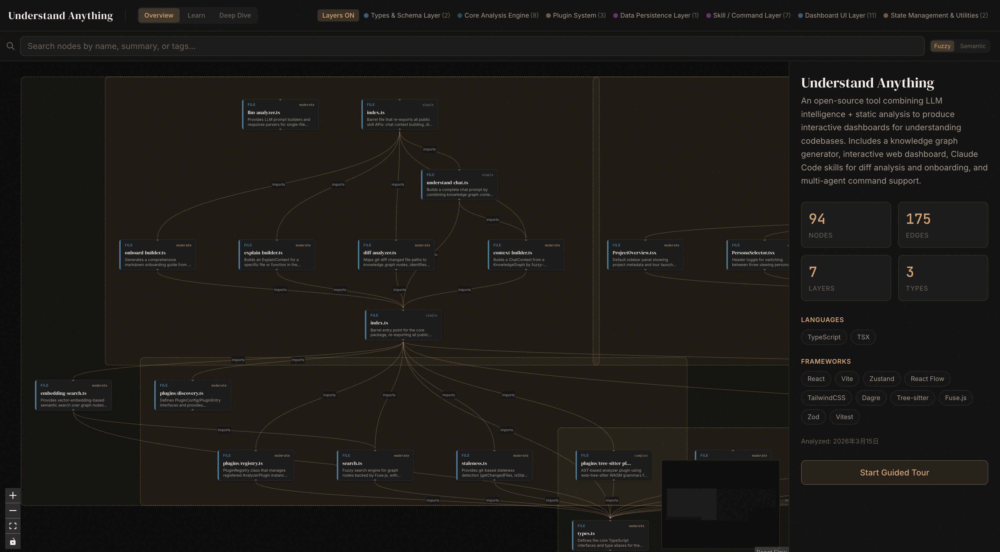

Learning Playground · Tool guide
Understand Anything
Turn a folder of cross-linked notes into a map you can question. In the KV-cache trial, following two links is enough to reconstruct a published memory figure.
Explore the saved knowledge map · Explore the upstream dashboard demo
Find the evidence for 890 bytes
- Start with a mechanism. Open the saved map at What can the next token reuse?. Select Read the same cache two ways. Keep the two values fixed. Predict the result for a zero query before reading the calculation. The weights become equal and the output is 6.
- Search for a result. Enter
890in the search box. Select Reconstruct 890 bytes per token. The selected article appears alongside the tour, with links into and out of that node. - Follow the dependencies. Follow the entry-size and writer-rate links. One packed entry occupies 356 bytes. Across the four global writers the model retains an average of 2.5 entries per token. Multiply them, then explain what each factor counts. The unit is global cache bytes per token.
- Use the tour in reverse. Pick a different node linking to the result. Explain how it helps a reader check the calculation. A returning reader can go straight to the global-budget article.
Choose the graph you need
- Linked notes
- The knowledge skill reads Markdown articles with double-bracket wiki links and an index organized by headings. Index categories define layers and give the tour an order. An optional raw-source folder can contribute source nodes.
- Software architecture
- The codebase workflow maps files, their relationships, and architectural layers. Related skills explain individual files, analyze a diff, build an onboarding tour, or map domains and flows. This is a different entry point from the wiki analysis.
- Saved graph
- A reader can pan and search the official dashboard, select a node, inspect its neighbors, or follow a tour. Once saved, the graph can be explored without running another analysis or connecting a model.

Which relationships are generated?
Markdown articles Parsed wiki links Agent analysis batch Merged graph Reader or dashboard
The Python parser reads headings, metadata and explicit links. If article A links to article B, this relationship can be recovered directly from the text. The agent contributes a different class of information, such as recognizing that two articles support one claim. Its inferences appear in a batch file you can inspect.
The merger takes the scan and any analysis batches, merges duplicate entities by name, normalizes relationship types, and builds layers and tour stops. A reader consumes a saved graph, so a second person sees the same connections. The quality of a semantic edge still depends on how faithfully the agent interpreted the material. Parser · Merger.
Rebuild the graph from the saved batch
From a playground checkout, use Git, curl, tar, Python 3.10 or newer and Node.js 18 or newer. This replay keeps the ten Markdown articles and the agent batch fixed. The final two lines create a portable HTML reader in a fresh directory.
./install.sh understand-anything
run=topics/how-transformers-remember/cases/one-more-token/runs/2026-11-24-understand-anything
skill=.local/tools/understand-anything/source/understand-anything-plugin/skills/understand-knowledge
tmp=$(mktemp -d)
cp "$run"/wiki/*.md "$tmp/"
python3 "$skill/parse-knowledge-base.py" "$tmp"
cp "$run/analysis-batch-1.json" "$tmp/.ua/intermediate/"
python3 "$skill/merge-knowledge-graph.py" "$tmp"
python3 tools/understand-anything/export-map.py "$tmp/.ua/intermediate/assembled-graph.json" "$tmp/map.html"
echo "$tmp/map.html"For fresh analysis of your own wiki, give the installed understand-knowledge skill your directory and ask for an English knowledge graph. Expect the parser to report resolved and unresolved links before semantic extraction. Inspect any unexpected edges in the resulting batch. Knowledge skill.
How the trial was assembled
On November 24, 2026, we split the shared field guide into ten English wiki articles, added an index and made references explicit with wiki links. The parser found ten articles, four index topics and 23 resolved links. A Codex agent following the upstream analyzer instructions added five entities, ten claims and eighteen connections in one batch. The result contains 29 nodes, 51 edges, four layers and four tour stops.
The upstream viewer v2.9.8 CLI loaded, but the environment rejected its request to bind a local port. A bundled copy of the official dashboard displayed the saved graph in Safari. The playground also wrote the portable map with search, article text and links in both directions. Codebase analysis, diff review and domain mapping remain untested here.
Learner feedback is pending. The question for this case is whether navigating the writer rate and entry size helps the learner reconstruct the number independently. Saved semantic analysis · Trial record.